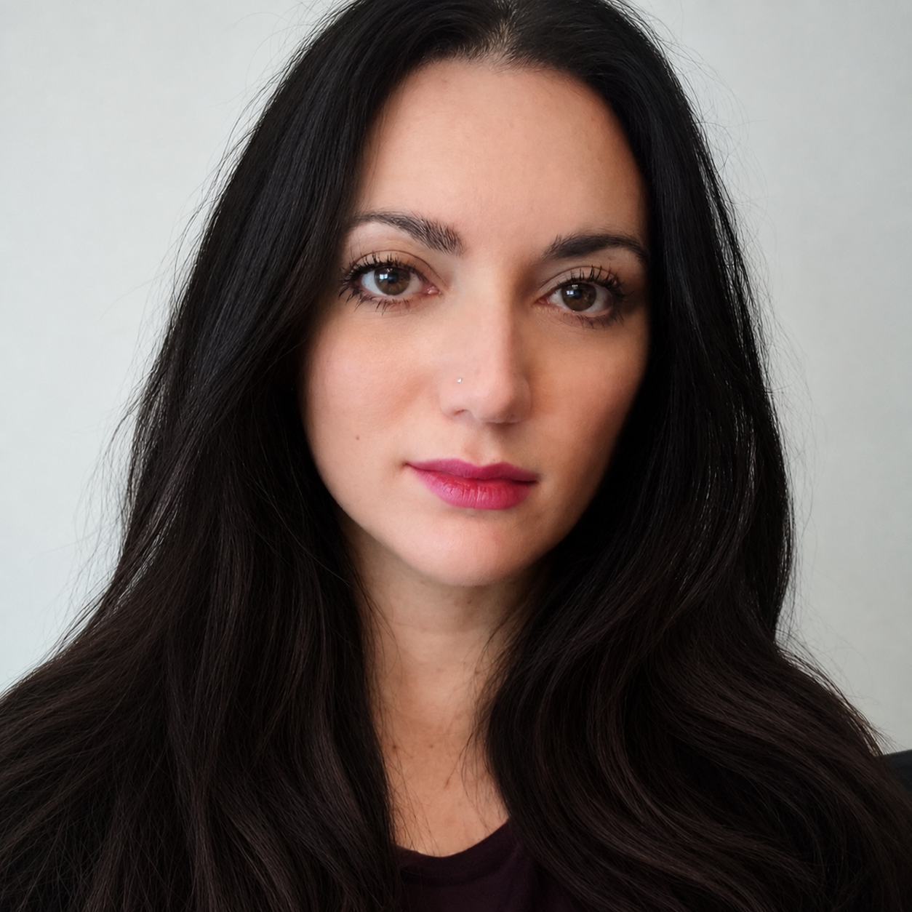

A
In Silico Medicine & Digital Twins
Mechanistic simulation, virtual patients, in silico trials and computational validation for translational medicine.
Computer Engineer & Researcher in Computer Science
I am Valentina, a computer engineer and researcher at the University of Catania. I bring together artificial intelligence, biomedical data and mechanistic simulation to understand biological systems and support predictive, personalised and safer medicine.

My research sits at the intersection of computer science and biomedicine. I design reproducible computational workflows that integrate omics, clinical and experimental data with machine learning, bioinformatics and mechanistic simulation.
A recurring theme of my work is the translation of complex biological questions into formal, quantitatively testable computational models — from immune-system simulation and vaccine design to RNA therapeutics, digital twins and New Approach Methodologies (NAMs).
Four connected areas, one common goal: make biomedical prediction more mechanistic, interpretable and useful.
Mechanistic simulation, virtual patients, in silico trials and computational validation for translational medicine.
Machine learning, predictive modelling and integrated pipelines for high-dimensional biomedical and omics data.
Immunoinformatics, reverse vaccinology and multiscale approaches to vaccine design and immune-response prediction.
Computational alternatives and complements to traditional preclinical testing, with emphasis on biological consistency and credibility.
Research lines and funded collaborations connecting computational methods with biomedical and interdisciplinary questions.
A modular framework for prioritising RNA–LNP formulations by integrating predictive modelling, synthetic transcriptomics and biologically informed consistency assessment.
Computational characterisation of immune-state landscapes from large-scale single-cell data, with an initial focus on multiple sclerosis, differential abundance and treatment-associated states.
An integrated vaccine-design workflow combining pangenomics, antigen selection, epitope prediction, safety filters and multi-objective optimisation, designed for downstream UISS validation.
Research activities on health digital twins and in silico applications integrating computational models with Edge, Cloud and HPC infrastructures.
An integrated AI-guided modelling pipeline to assess and mitigate exposure and neurotoxicity associated with micro- and nanoplastics.
I contribute to dataset integration, AI-assisted information extraction and feature selection, mechanistic modelling of blood–brain barrier permeability, and the integrated predictive framework.
Associated Investigator · INFO-01/A
PI: Giulia Russo · University of Catania
SYR-AI — Supporting Young Researchers through Artificial Intelligence
Cultural Heritage Reconstruction of Original Chromatic Appearance through Modeling and Artificial Intelligence: a quantitative framework combining archaeometric, colour and environmental data.
I contribute to data curation, harmonisation and preprocessing, AI-assisted screening, feature selection, and the development and evaluation of machine-learning models for colour reconstruction.
Associated Investigator · INFO-01/A
PI: Salvatore Gallo · University of Catania
SYR-AI — Supporting Young Researchers through Artificial Intelligence
A few papers representing the breadth of my computational research.
Explore the full publication list in my academic CV or on ORCID.
Computational tools and programming languages for In Silico Medicine.
Pharmaceutical Chemistry and Technology, University of Catania.
In Silico Medicine: state of the art, in silico trials and digital twins in healthcare.
University courses, BIOMETEC Master and ICSC RE-TRAIN-ME activities.
Presentation of research activities of the COMBINE group at the DSFS Research Day.
Invited scientific talk on innovation, ethical responsibility and regulatory credibility of NAMs.
Presentation on the role of the University of Catania within the ECHO-TWIN initiative.
Independent expert contributing to scientific and technical evaluation of HPC resource requests within Spoke 8.
Interested in computational medicine, systems immunology, digital twins, NAMs or collaborative biomedical modelling?
valentina.disalvatore@unict.it
University of Catania · Catania, Italy